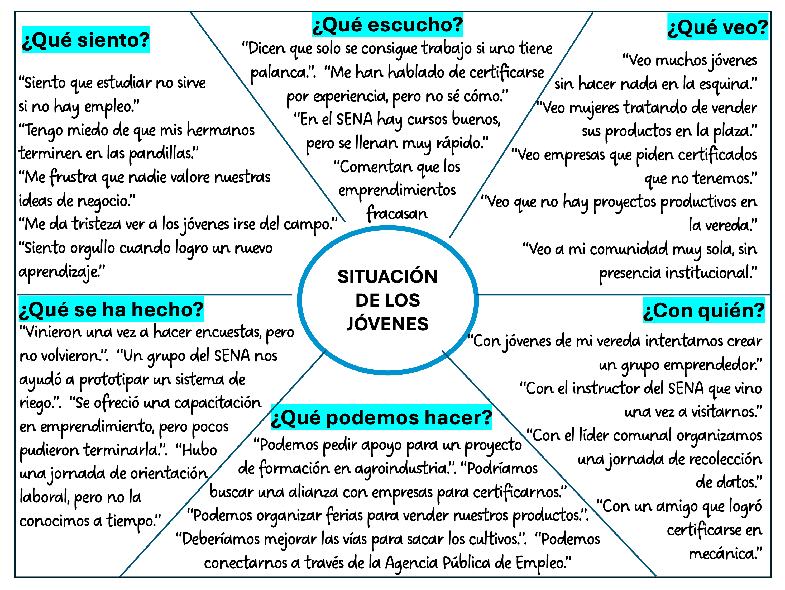
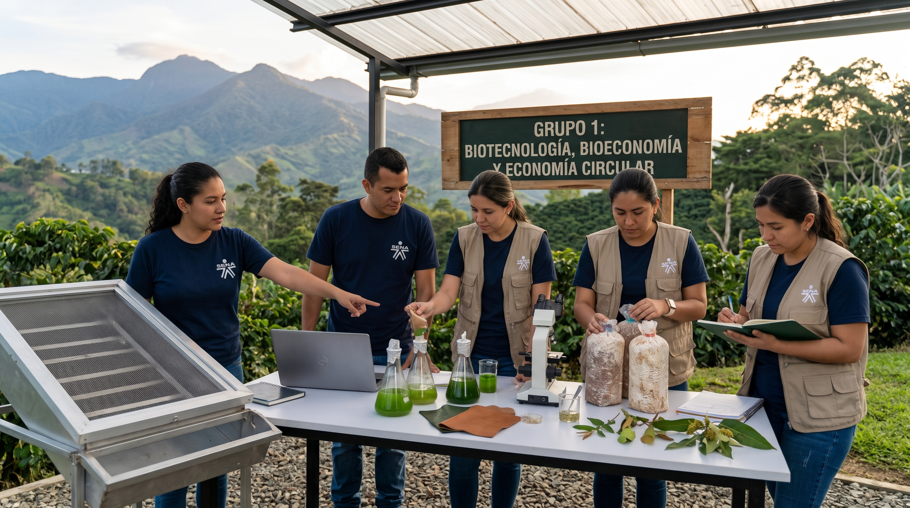
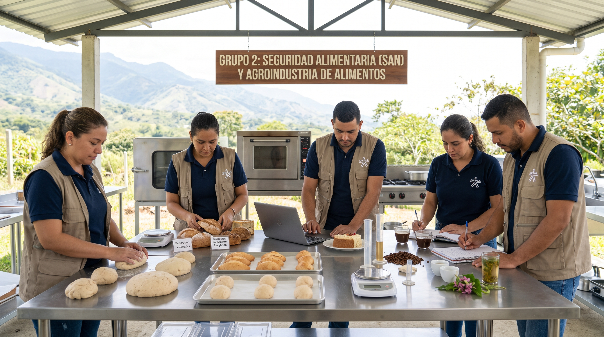
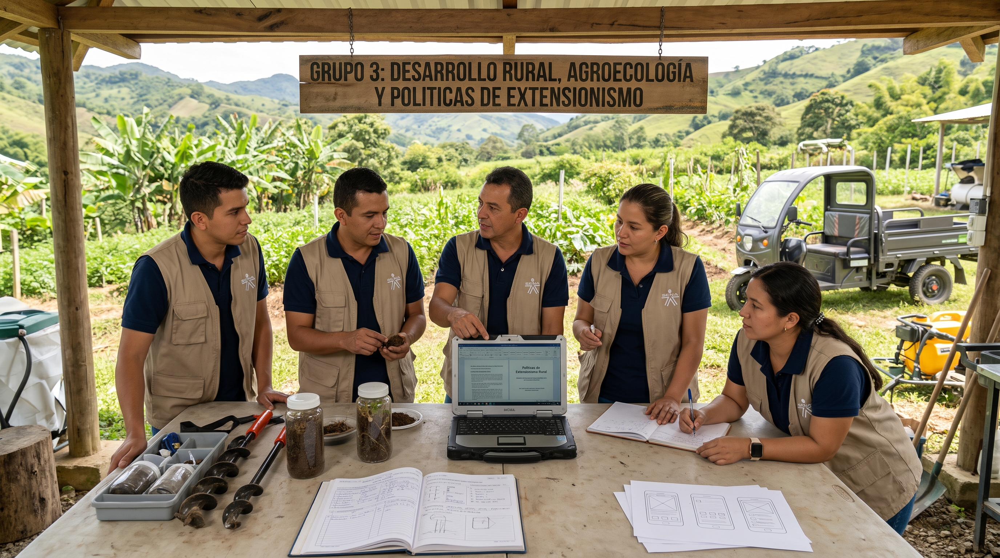
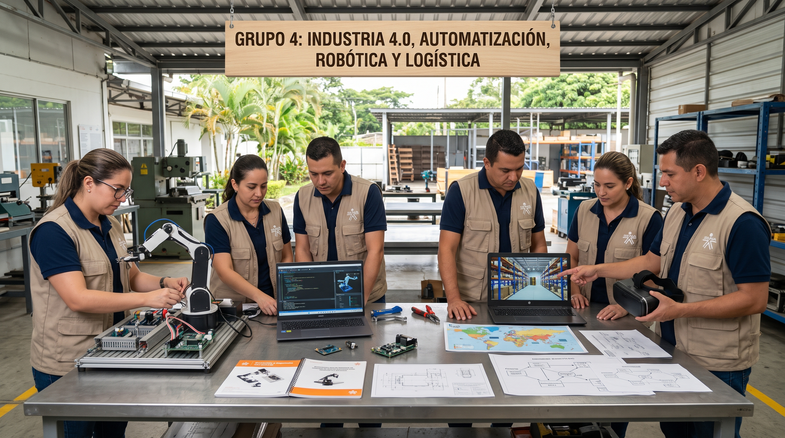
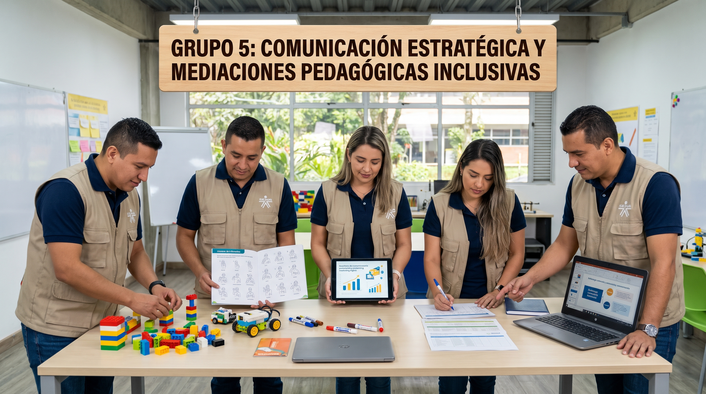

Esta funcionalidad estará disponible próximamente en la versión final.
En el contexto actual de transformación digital acelerada, la Inteligencia Artificial emerge como un catalizador de cambio en los procesos educativos. Sin embargo, persiste una brecha entre el potencial de la IA y su aplicación efectiva en la investigación y práctica pedagógica cotidiana.
Frente a este desafío, no se trata de competir con la IA en tareas que ella puede realizar, sino de potenciar aquello que es irreductiblemente humano: interrogar con propósito, contextualizar con sentido, contrastar con criterio, verificar con rigor y cocrear con empatía.
Integrar herramientas de inteligencia artificial en los procesos de investigación pedagógica en el marco de la política de gestión de IA en el SENA.
La capacitación se desarrollará en sesiones presenciales de 8 horas diarias (8:00 AM - 5:00 PM), estructuradas bajo los 5 niveles de la Taxonomía Emergente:
¿Quién de ustedes le entregaría su proyecto de investigación a un becario de primer semestre para que lo haga solo, sin supervisión? ¿Nadie?
Entonces, ¿por qué muchos le piden a la IA que "les haga la pregunta de investigación" y copian y pegan lo primero que sale?
La IA no es su jefe; es su asistente a cargo. Durante estos 5 días, vamos a aprender a darle instrucciones precisas, a validar sus respuestas y a mantener el timón de la investigación pedagógica.
La IA es un copiloto, pero el piloto es ustedes.
Escribe en un papel una frase de cómo vas a "domesticar" a tu asistente IA durante esta semana.
Ejemplo: "Yo le dicto el contexto, ella me ayuda a redactar".
Objeto de estudio: Problemas técnicos, tecnológicos, socioeconómicos o de un sector productivo/disciplinar específico.
Propósito y Alcance: Crear, probar o perfeccionar productos, prototipos, software, servicios o procesos técnicos concretos.
Observación: El investigador observa el problema técnico como un objeto externo desde una postura analítica para optimizarlo.
Objeto de estudio: Las prácticas de formación, los procesos de aprendizaje, las mediaciones didácticas y las competencias.
Propósito y Alcance: Transformar la práctica del instructor, comprender cómo se aprende y mejorar la Formación Profesional Integral (FPI).
Observación: El instructor forma parte activa del fenómeno. Se observan interacciones entre sujetos cognoscentes y el instructor convierte su práctica en objeto de indagación.
Ocurre cuando se ejecutan proyectos de investigación aplicada de alta producción técnica (patentes, prototipos SENNOVA), pero los instructores investigan aislados. La investigación aplicada solo cobra sentido SENA cuando el problema técnico sirve como pretexto pedagógico para desarrollar competencias en los aprendices.
Escala lineal de 6 niveles: Recordar, Comprender, Aplicar, Analizar, Evaluar, Crear. El investigador escala solo, con su propio esfuerzo cognitivo.
Nivel 0: Explorar y Situar. Aquí el investigador no delega; inyecta contexto (Context Engineering) y se sumerge en el territorio.
Solo después de este anclaje humano, la IA puede ser usada como asistente en los niveles superiores (Formular, Analizar, Transferir).
En el SENA, la IA nunca reemplaza al investigador. Es un copiloto que nos ayuda a procesar la complejidad del territorio, siempre y cuando nosotros mantengamos la soberanía cognitiva y la pregunta de investigación.
Antes de investigar, debemos "ponernos en los zapatos" de los actores involucrados (aprendices, campesinos, Mipymes, etc.). El mapa de empatía nos ayuda a salir del escritorio y entender sus dolores, sueños y realidades.

La IA (o ustedes mismos) agrupará los post-its en Debilidades, Oportunidades, Fortalezas y Amenazas. Luego, cruzará estos factores para generar Estrategias Emergentes (Ej: Fortaleza + Oportunidad = Estrategia Ofensiva).
No todas las estrategias son responsabilidad del SENA. Aquí filtramos para definir nuestro nicho de acción:
Copia y pega este texto en ChatGPT, Gemini o Claude, y adjunta la foto de tu cartelera.
Haz clic en el número para descubrir el rasgo. El botón cambiará a rojo una vez seleccionado.
Selecciona un grupo para ver su enfoque. Activa el interruptor para revelar los integrantes.




